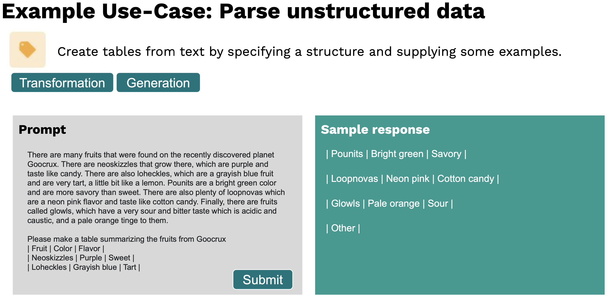

First off a bold statement: We want everybody to make use of AI and not AI to make use of everybody.
We at TUM.ai believe that understanding the basics of artificial intelligence is of high importance for everybody in today’s society. Therefore the following article aims at explaining the basics of AI models that work on natural language - specifically for non-experts.
After you´ve read this article you´ll know the basics of the world’s most powerful AI model “GPT-3” and understand why the adoption of this artificial intelligence algorithm can create a lot of opportunities in various industries. Further we will explain how you personally can leverage this state of the art technology.
If you want to jump straight ahead to real-world usecases and opportunities within the industry click here.
Natural Language Processing in a nutshell
Natural Language Processing(NLP) is a subfield of linguistics, computer science and AI concerned with processing and analysing human language. Imagine a Natural Language AI to be like a software program where text is inputed, processed in a specific way and then some sort of text is outputed (simplification). An example of Natural Language AI in our everyday live is the prediction of the next word on many of our smartphone keyboards. There your written sentences are used by the model to suggest the next most likely word. Other typical NLP tasks include:
Summarizing a text
Translation from language A to language B (e.g. English to French, but also translating one programming language to another e.g. Java to Python)
Classifyingdocuments for example by
political view
sentiment (positive, neutral, or negative customer reference)
spam within e-mail applications
Before we introduce GPT-3, there are two important technical progressions that are important to mention. If you´re interested about that click here.
First, in December 2017 the so called transformer architecture was developed, which revolutionized how text can be processed by the computer and GPT-3 is based upon. Within the transformer architecture the model can learncontext-sensitive-associations through a novel technology called attention [Vaswani et al. (2017) Attention is all you need]. For example look at this senctence: “Steve eats an apple because it tastes good.”Attention is measured by a value that indicates how relevant a word is in relation to another word. It and the apple refer to eachother and therefore represent one association.
These attention based operations are not sequence dependent and can be computed in parallel.
This explains the superiority of the transformer architecture compared to previous methods, which weren´t able to run operations in parallel or incable of looking at the whole input text at once. Since transformer architecturses build an internal representation of language during trainging, they are often also called “language models”.
Second, in recent years, self-supervised learning was refined a lot: Language models were trained by first masking out (parts of) words and then predictingthese missingwords in different sentences. This leads to the concept of generative pre-trained transformers (GPT). This allowed researchers to achieve similar results without the need for hand-labeled data, which is expensive and time consuming to create. This was a major breakthrough because the availability and generation of sufficient hand-labeled data was often a hurdle, but text on the internet is near infinite.
What's the deal with GPT-3 and what can it do?
GPT-3 (generative-pretrained-performer 3) is a recent advancement in the field of artificial intelligence.
It performs equally or better on a variety of different tasks compared to the state of the art models in the respective fields (models that have been specifically trained for the respective task only). Building on their previous efforts (GPT-1 and GPT-2), OpenAI released their beta version in the summer of 2020. While most other language models are designed for a single task, GPT-3 provides a general-purpose “text in, text out” interface, which makes it possible to apply it to virtually any language task.
Examples for the tasks that GPT-3 is able to take on include:
Summarization with different output
Turn meeting notesinto asummary.
Summarize long articles by providing key concepts.
Create spreadsheets tables that extract knowledge pieces from long textsby specifying a structure and supplying some examples
Translate difficult text into simpler texts(e.g. for a 2nd grader)
Coding tasks
Describe a user interface and get code that produces the desired interface right away
Convert JavaScript to Python
Classifying items into categories via example
Classify the sentiment (negative, neutral, positive) of short texts like posts and tweets
Classify the political view of certain articles
Creating longer texts on specific topics without much input
Create study notes on a given topic
Generate an outline for a specific research topic or essay
Generating multiple versions of creative texts to describe things
Generate an advertisement for a product description
Propose product names for shortly described products
Answering universal questions
Answer universal questions
Provide company information for financial metrics
Facilitate a conversation with an AI assistant regarding various topics (chat-bot)
Note that a lot of these tasks can be achieved by GPT-3 without or very little input.
Given any text input or task you provide to GPT-3, the interface will return a text completion, attempting to match the pattern you gave it. You can easily “train” it by typing just a few examples of what you’d like it to do into the interface; its success generally varies depending on how complex the task is.

Source:[OpenAI (2020) OpenAI API]
In the following video you can observe an example for the the creation of an essay outline about Walt Disney. The bold text in the video is the input provided to the model.
Another capacity of the user interface is that parameters can be adjusted to better serve the purpose of the current task. Figuratively speaking, it can even be configured to provide more diverse output, which can be quite handy to brainstorm texts with a creative purpose (click here to understand how that works).
This can be done by increasing the so called “temperature” parameter. A high temperature value means the model will brainstorm by providing various outputs that differ more to eachother compared to a very deterministic answer that would be achieved by a low “temperature”
For example, in the following video this approach has been pursued to obtain a short advertising text.
One of the most practical advantages of GPT-3 is its ability to generate valid text output with a multitask interface, by using very little or no input data.
To summarize, the main benefits of GPT-3 in simple terms are that it has been trained on a very large part of the internet, it can be used as a general-purpose out-of-the-box model for a vast range of different tasks and it can be very easily taught to learn another task by showing it simple examples without the need to write a single line of code.